Sistema Solar: sequência de atividades adaptadas para AEE
Três atividades com apoio visual e diferentes formas de resposta: Conhecendo o Sistema Solar, Quem Sou Eu e Estações do Sistema Solar.
Materiais didáticos, atividades, divulgação científica e produções acadêmicas de Marcela Ogioni do Nascimento, licencianda em Ciências Biológicas pela UFES.

Aqui estão produções autorais já organizadas para portfólio e Currículo Lattes. Materiais que ainda passam por revisão de direitos de imagens ficam listados como produção, sem arquivo aberto para redistribuição.
Três atividades com apoio visual e diferentes formas de resposta: Conhecendo o Sistema Solar, Quem Sou Eu e Estações do Sistema Solar.
Material didático autoral organizado para ensino e estudo de Astronomia no 9º ano.
Sistema Solar, Astronomia, vida fora da Terra e evolução das estrelas em apresentação didática.
Caderno autoral organizado por habilidades e conteúdos de Ciências.
Material didático autoral desenvolvido com base em literatura científica e referências acadêmicas.
Simulação jornalística para trabalhar cenários ambientais, biomas brasileiros e mudanças climáticas.
Fichas de enigmas e cartões recortáveis para identificação e classificação de astros e corpos do Sistema Solar.
Recurso visual para o ensino de Genética e Biologia Molecular no Ensino Médio.
Estes são os materiais finalizados registrados no portfólio. A presença no catálogo não significa que todos os arquivos estejam liberados para redistribuição: downloads só serão abertos após a revisão de licenças de imagens e elementos de terceiros.
Desenvolvimento de uma sequência didática para o ensino de Ciências.
Ver registro ↗Sequência didática como ferramenta pedagógica.
Saberes tradicionais em chás e rezas.
Educação ambiental e saber etnobotânico em unidades de conservação.
Memória, corpo e resistência negra.
Produção publicada nos Anais do III Simpósio da Equidade Racial.
Projeto independente de educação científica que reúne materiais de Ciências e Biologia, atividades inclusivas, recursos para professores e produções acadêmicas. O objetivo é transformar conteúdos complexos em materiais claros, visuais e utilizáveis em sala de aula.
Marcela Ogioni do Nascimento é graduanda em Ciências Biológicas — Licenciatura pela Universidade Federal do Espírito Santo, Campus de Alegre, com experiência em PIBID, monitoria de Biologia Celular, estágio supervisionado e produção de materiais didáticos.
Mais ciência. Mais acesso. Mais curiosidade. ♡
Para colaboração, produção de conteúdo, materiais didáticos ou oportunidades profissionais: